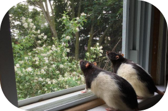
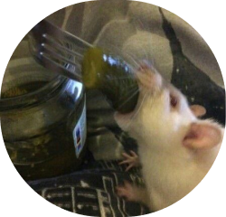
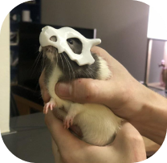

Умови утримання
Щури можуть стати чудовими домашніми тваринами. Вони люблять, їх можна навчити деяким основним командам, і вони бувають різних кольорів, розмірів. Незважаючи на свої відмінності, всі домашні щури походять від коричневого щура, або Rattus Norvegicus, і мають тупий ніс, маленькі очі і вуха, а також хвіст, який дорівнює довжині тіла, хоча деякі варіанти мають генетичні відмінності, такі як відсутність волосся або навіть вух.
  
Раціон
- свіжа зелень
- фрукти
- ягоди
- відварене м'ясо чи печінка
- нежирний сир
- зварені круто яйця
- відварену рибу та морепродукти: хек, мінтай, креветки
- натуральний несолодкий йогурт, кефір, ряжанку
Дугляд
- Вибір та облаштування клітки
- Безпека вихованця в будинку
- Наповнювач та чистота клітки
- Раціон декоративного щура, турбота про зуби
- Спілкування, ігри, дресирування
- Огляди та візити до ветлікаря